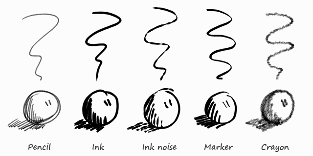

笔刷¶
绘制笔刷¶
参考
- 模式
笔触编辑模式
- 面板
- 笔刷
预设笔刷 列表视图 。使用 1 到 0 切换笔刷，选中列表中对应位置的笔刷。
- 厚度
全压力笔画像素宽度，相对于视窗为恒值，亦即不受缩放影响。实际宽度取决于压力强度。
- 敏感度
厚度对绘图笔压力的敏感度，可使用右侧的小按钮禁用压感。
- 强度/力度
与敏感度类似，不过影响的是颜色的alpha值。该参数用于得到类似褪色或者水彩的效果。
- 随机性
敏感度 和 强度/力度 的随机系数，可以使用其左侧的波浪线图标启用。
- 抖动
为笔触指定随机抖动值。
- 角度
定义笔画宽度为100%的角度，笔画粗细随方向发生改变。
- 系数
设置笔画角度对宽度的影响系数。
Tip
角度 和 角度系数 参数用于创建如同宽度随绘制角度改变的马克笔笔刷。这样线条看起来更加自然。

预设笔刷。¶
笔画质量¶
这些都是单笔刷设置，笔画绘制结束后(将2D/屏幕空间坐标转换为3D/数据空间坐标)会应用这些设置。由于是单笔刷设置，用于可以对不同类型的笔刷应用不同的属性。例如：最终的 “完美” 笔刷使用更高的平滑和/或细分，而初始化的 “布局” 笔刷使用较低的平滑和/或细分。
- 平滑
指定笔刷的平滑程度(使用与 “Smooth”相同方法)，用于消除锯齿边和抖动。
- 迭代
指定对笔刷应用的平滑次数。每执行一轮平滑，平滑强度减半。也就是说，第一轮的平滑系数为100%，接下来就是50%，20%，以此类推。该设置用于提高重度细分笔画的质量，多次平滑可以降低 “分面”瑕疵。
- 细分步数
指定对笔刷应用的细分次数。每细分一次笔画，笔画的每一对相邻控制点之间都会新增一个控制点。主要用于使笔画看上去不那么 "棱角分明" (特别是快速绘制的大笔画)，在应用平滑前细分笔画。
- 随机性
细分后新增笔画的随机程度。